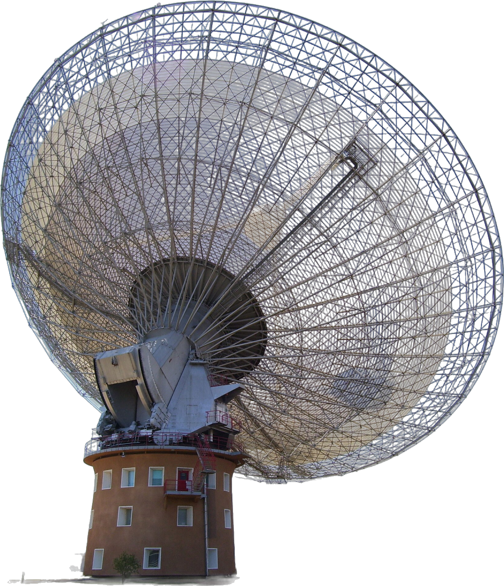
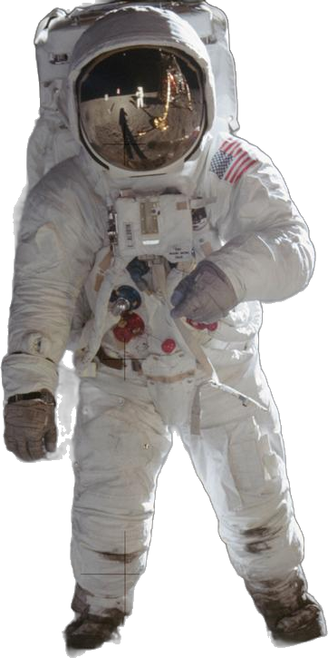
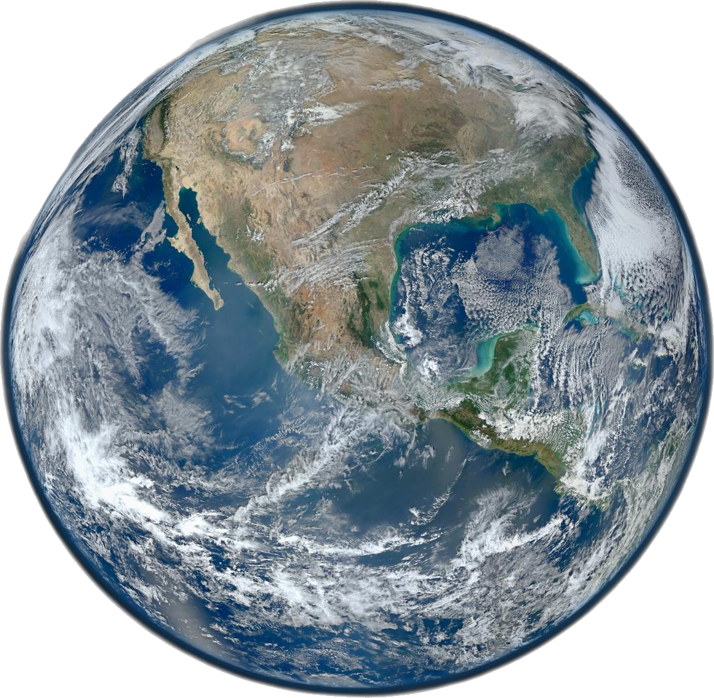
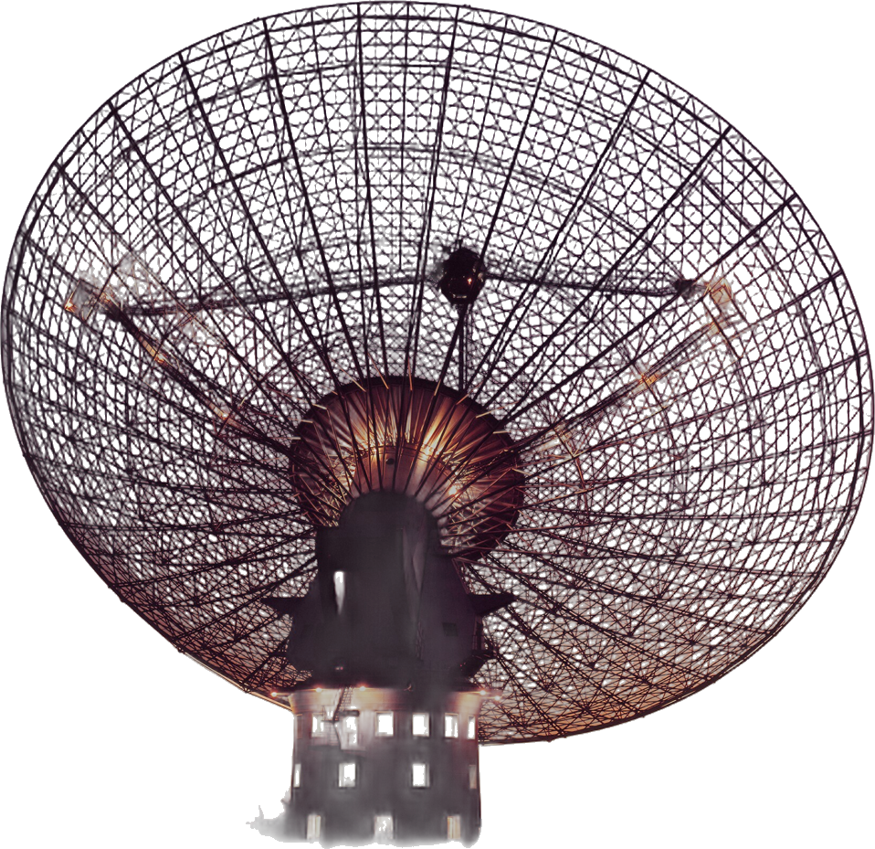
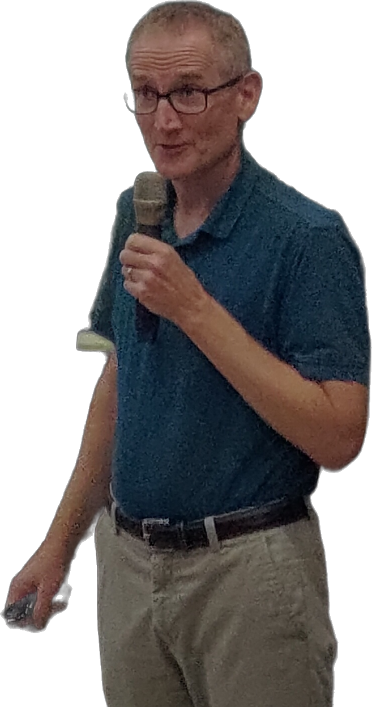

Stephen West · CC BY-SA 3.0

64 М
диаметр тарелки
NASA · трансляция 21.07.1969 · общественное достояние

ИЮЛЬ 1969

NASA · ЦУП, Хьюстон, 1969
ИСТОЧНИК ТВ-СИГНАЛА
GOLDSTONE → PARKES

> 2 Ч
почти вся прогулка по Луне — через Parkes
0
зрителей по всему миру

ФИЛЬМ · 2000
«ТАРЕЛКА»
The Dish — о той самой трансляции
MURRIYANG
официальное имя телескопа сегодня
0,4 ГГц
3 ГГц
1,4 ГГц
САМОЕ ЧУТКОЕ
УХО НА ЗЕМЛЕ
УХО НА ЗЕМЛЕ
слышит то, что старше нас на миллиарды лет
2007

АСТРОНОМ
Дункан Лоример
СТУДЕНТ
Дэвид Наркевич
разбирал старые записи Parkes
АРХИВ PARKES · 2001
фото: Ranjan adarsh29 · CC BY 4.0

МАЛОЕ
МАГЕЛЛАНОВО
ОБЛАКО
МАГЕЛЛАНОВО
ОБЛАКО
телескоп искал там пульсары · 2001
NASA / ESA / Herschel · общественное достояние

arXiv 0709.4301 → Science 318:777 · 2007
<5 МС
длилась вспышка
басы сильно опоздали
≈1 МЛРД
лет летел сигнал — по первой оценке
высокие — первыми
низкие отстают
КОСМОС
НЕ ПУСТОЙ
НЕ ПУСТОЙ
БЛИЖЕ · КОРОТКИЙ ПУТЬ
ESA/NASA/JPL-Caltech/STScI
ДАЛЬШЕ · ДЛИННЫЙ ПУТЬ
подпись + расстояние
НОВЫЙ КЛАСС ЯВЛЕНИЙ · 2007
FRB
Fast Radio Burst · быстрый радиовсплеск
НАЙДЕНО ВСПЛЕСКОВ: 1
ТО ЛИ ОТКРЫТИЕ…
…ТО ЛИ ПОМЕХА
B · НАУКА ИЗНУТРИ · 01